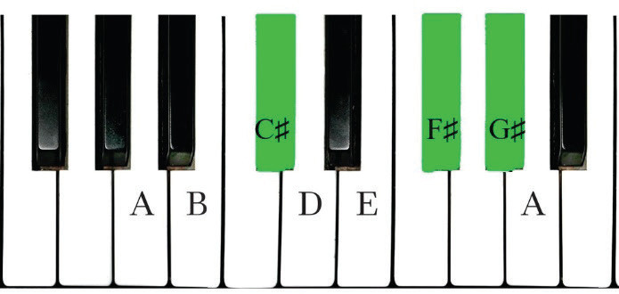
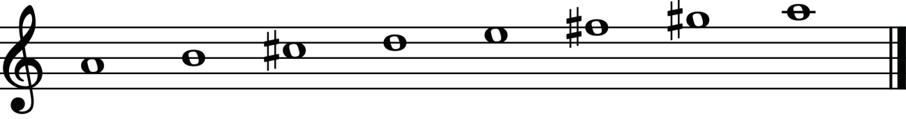
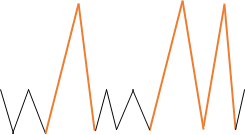
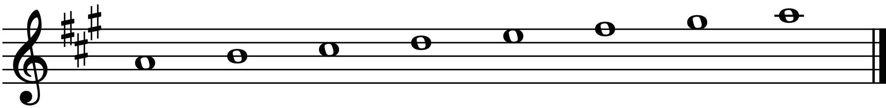
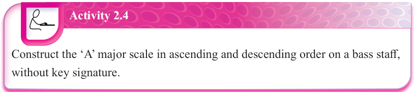

TTSTTTS
Figure 2.19: The ‘A’ major scale on a piano


Figure 2.20: The ‘A’ major scale without a key signature

Figure 2.21: The ‘A’ major scale with a key signature

Activity 2.4
Construct the ‘A’ major scale in ascending and descending order on a bass staff, without key signature.
The B♭ major scale
You can arrange a series of eight notes starting from the first note, which is B♭, when constructing a B♭ major scale.
This can be done while following the pattern for constructing major scales, which is T-T-S-T-T-T-S.
The following are steps that can be followed when constructing the B♭ major scale: